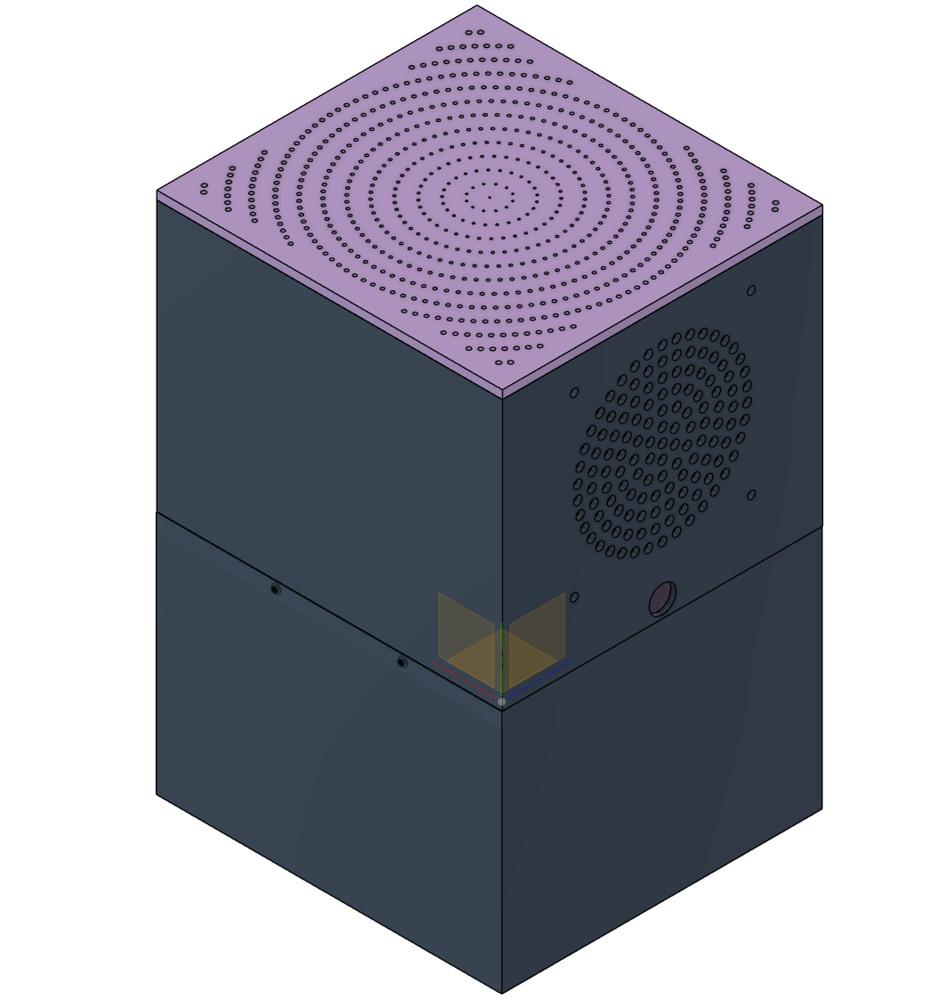
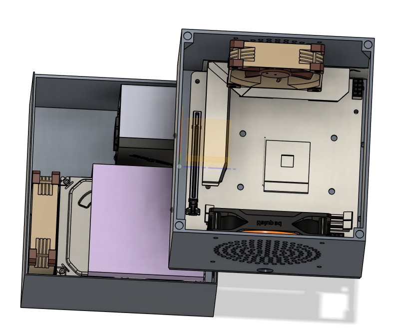

Résumé
Ce projet vise à créer un NAS fiable et adapté à mon environnement homelab, avec un boîtier imprimé en 3D pensé pour le flux d’air, le câblage et la maintenance. La partie logicielle couvre l’organisation du stockage, l’exposition réseau (partages), et l’intégration de services de sauvegarde.
Objectifs
- Fiabilité : stockage redondé, monitoring, alerting.
- Maintenance : accès simple aux disques, câbles et ventilation.
- Sécurité : contrôle d’accès, segmentation, chiffrement si nécessaire.
- Évolutivité : capacité à ajouter disques / services au fil du temps.
Matériel
Châssis / impression
Boîtier modélisé puis imprimé en 3D, conçu pour le flux d’air et l’accès aux composants.
- Ventilation / airflow
- Passage de câbles
- Accès disques
Stockage
Choix des disques et du mode de redondance selon les besoins (capacité, tolérance de panne).
- RAID / pool de stockage
- SMART / suivi d’état
- Plan de remplacement
Réseau
Intégration au réseau homelab, avec accès sécurisé et performances stables.
- Segmentation (VLAN)
- DNS interne
- Accès distant (option)
Logiciel
Services
- Partages réseau (SMB / NFS selon usage).
- Services de sauvegarde (règles, rétention, vérification).
- Supervision (disques, températures, capacité).
Organisation
- Arborescence par usage (documents, médias, sauvegardes).
- Comptes/groupes, droits et séparation des données.
- Journalisation et alertes.
Sécurité & sauvegardes
L’objectif est de réduire la surface d’exposition (accès strictement nécessaire) et d’assurer la continuité des données via des sauvegardes testées.
- Accès : droits minimaux, séparation admin / utilisateur.
- Réseau : isolation possible dans un VLAN dédié.
- Sauvegardes : stratégie 3-2-1 (à adapter), vérification/restauration régulières.
Résultats
Disponibilité
Stable
Maintenance
Accès rapide
Objectif
Données protégées
Galerie


Notes & détails
Ces blocs te permettent d’ajouter beaucoup d’information sans alourdir visuellement la page.
Composants & spécifications
- CPU / RAM : Ryzen 5 5600G / 32 Go
- Nombre de disques / capacité : 4 HDD / 2 SSD / 18 TO
- Ventilation / alimentation : 2 / 550W SFP
Architecture logicielle
- OS / distribution : Unraid
- RAID / ZFS / autre : ZFS
- Partages (SMB/NFS) : SMB, Time Machine
- Services (Nextcloud, backup, etc.) : NPM , Hommar, Home Assistant , FreshRSS , immich , n8n